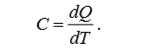
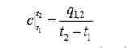
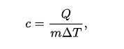
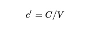
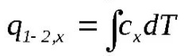
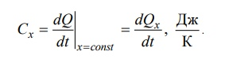
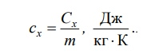
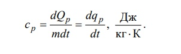
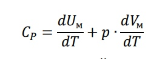

Определение удельной изобарной теплоемкости воздуха
Принадлежности
- Центробежный вентилятор
- Металлический воздуховод с внутренним диаметром 40 мм
- Теплоэлектронагреватель(ТЭН)
- Амперметр и вольтметр
- Микроманометр
- Трубка Пито и пьезометрическая трубка
- Два стеклянный термометра
Цель работы - экспериментальное определение средней объемной теплоемкости воздуха в процессе при постоянном давлении
Введение
Способностью тела накапливать теплоту характеризуется теплоемкостью. Теплоемкостью называется кол-во теплоты, которое нужно подвести к телу или отнять от него для изменения температуры тела н один градус Теплоемкость выражается следующей формулой:
Для конечного процесса 1-2 вводится понятие средней теплоемкости как отношение полного кол-ва теплоты к изменению температуры:
Если система предаствляет собой однородное вещество, то примененяю понятие удельной теплоемкости. Удельной теплоемкостью называется кол-вл тепла, необходимое для нагревания единицы кол-ва вещества на один градус.
В зависимости от выбранной единицы измерения кол-ва вещества различают три вида удельной теплоемкости:
Удельная теплоёмкость — это отношение теплоёмкости к массе, теплоёмкость единичной массы вещества (разная для различных веществ); физическая величина, численно равная количеству теплоты, которое необходимо передать единичной массе данного вещества для того, чтобы его температура изменилась на единицу..
Молярная теплоёмкость — отношение теплоёмкости к количеству вещества, теплоёмкость одного моля вещества (в принципе разная для различных веществ, хотя в свете закона Дюлонга — Пти — имеет близкое значение, и даже приближенно совпадает в достаточно широких пределах изменения температуры у многих веществ). Это — физическая величина, численно равная количеству теплоты, которое необходимо передать одному молю (данного) вещества для того, чтобы его температура изменилась на единицу, или — произведение удельной теплоёмкости элемента на его атомную массу дает количество тепла, необходимое для повышения температуры 1 моля этого элемента на 1°С (или, что равнозначно, на 1 К).
Объёмная теплоёмкость характеризует способность данного объёма данного конкретного вещества увеличивать свою внутреннюю энергию при изменении температуры вещества (подразумевая отсутствие фазового перехода). Равна отношению теплоёмкости данного образца вещества C к его объему V. Это теплоёмкость единицы объёма данного вещества. Подразумевается, что вещество однородно. Используется понятие объёмной теплоёмкости главным образом применительно к твёрдым телам и жидкостям, поскольку они имеют достаточно слабо изменяющуюся в зависимости от изменения внешних условий плотность.
Количество теплоты в элементарном процессе определяется по выражению:
А в конечном процессе:
Теплоемкость рабочего тела зависит не только от собственных физических свойств вещества, но и от того, в каком конкретном термодинамическом процессе рабочее тело получает или отдает энергию в форме теплоты. В зависимости от вида термодинамических процессов, в которых учавствует рабочее тело, его теплоемкость можнт принимать любые значения от минкс бесконечности до плюс бесконечности. В технической термодинамике преимущественно используются изобарная и изохорная теплоемкости.
Под истинной полной теплоемкостью вещества понимают отношение теплоты dQ, полученной веществом при бесконечно малом изменении его состояния в каком-либо процессе x = const, к изменению температуры dt этого вещества:
Теплота – функция процесса, значит, и теплоемкость зависит от процесса. Но при заданном условии x = const теплоемкость можно считать (только приближенно) функцией состояния. В расчетах чаще используют удельную массовую теплоемкость:
В роли заданного процесса x = const обычно выступают процессы изохорный (v = const) и изобарный (p = const). Удельная изобарная теплоемкость:
Теплоемкость газа существенно зависит от того, при каких условиях он нагревается: при постоянном объеме или при постоянном давлении. В первом случае все сообщенное газу количество теплоты идет только на увеличение внутренней энергии газа, так как объем газа не изменяется. Во втором случае требуется еще дополнительное количество теплоты на совершение работы расширения газа, так как неизменность давления обеспечивается увеличением объема газа. Поэтому у газа различают две молярные теплоемкости при постоянном объеме и постоянном давлении и удельные. Формула для молярной теплоемкости газа:
